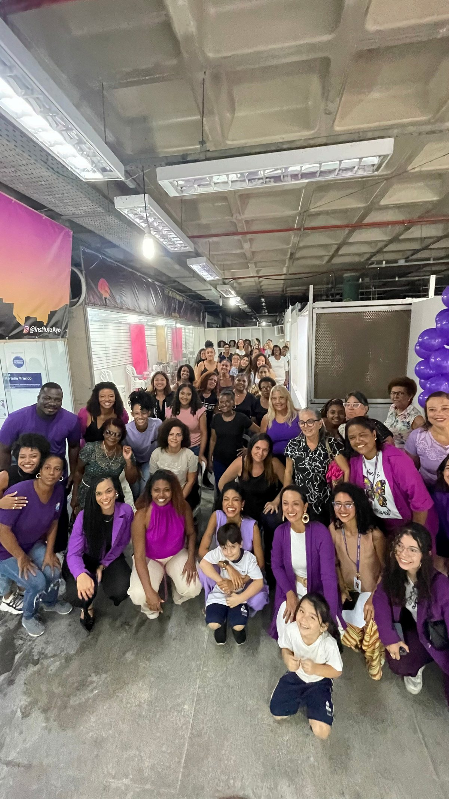
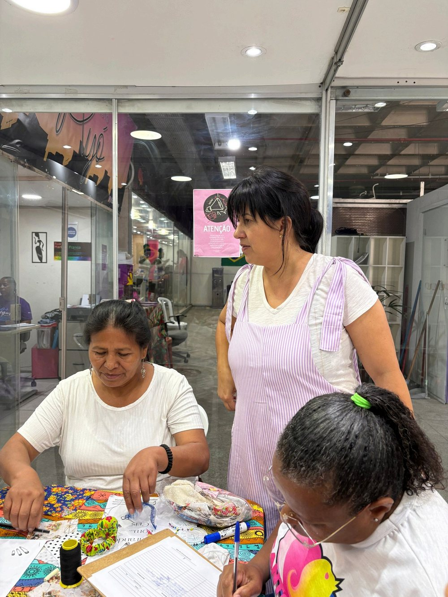
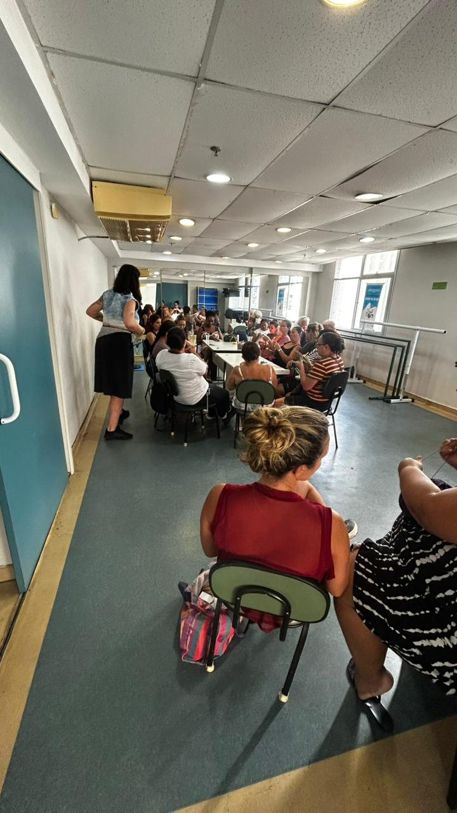

A primeira favela do Brasil
O Morro da Providência é habitado desde a década de 1890 e carrega as marcas históricas dessa precedência, com acesso limitado a serviço e infraestrutura básica.

Cada certificado entregue representa pertencimento, autonomia e dignidade. Mas os números também contam uma história, então eles estão aqui.
O Morro da Providência é habitado desde a década de 1890 e carrega as marcas históricas dessa precedência, com acesso limitado a serviço e infraestrutura básica.
Pesquisa registrou média de 5,8 anos de estudo entre a população adulta da Providência e a pior taxa de analfabetismo funcional entre nove favelas estudadas.
Dados do Programa Territórios Sociais, da Prefeitura do Rio com a UNESCO, apontam que mais da metade das famílias do Morro vive em insegurança alimentar e sem acesso a filtro de água.
É o que sustenta a Metodologia Odara. Sem acolhimento, sem leitura da situação familiar e sem ponte para o mercado, o curso técnico não muda a vida de ninguém.
O Instituto Ayó é parceiro do CRAI, o Centro de Referência e Atendimento para Imigrantes, que fica na Gamboa. Nas formações gratuitas acolhemos mulheres migrantes em situação de vulnerabilidade e transformamos esse acolhimento em renda e autonomia.
Hoje são alunas as chilenas Noelia Alejandra Riffo Contreras e Martha Quispe Condori, e já há venezuelanas refugiadas inscritas para a próxima turma.

Com o CRAI
RocinhaEm 2026 o Instituto começou a levar a formação para fora do território de origem. A turma de crochê da Rocinha e a turma de ritmos da Tijuca são as primeiras provas de que o modelo funciona em outro lugar.
É o que a Metodologia Odara prevê desde o desenho. Ela foi escrita para ser replicável e adaptável a outros territórios, mantendo o compromisso com a redução das desigualdades.
Ver como a metodologia funcionaEdital SMC nº 03/2023, Ações Locais, edição Paulo Gustavo, e Edital SMC nº 10/2024. Projetos aprovados com apoio da Prefeitura do Rio, do Ministério da Cultura e do G20.
Prefeitura do Rio, Secretaria Municipal de Cultura, CCPAR e MUHCAB, em projetos de cultura, mulher e patrimônio afro-brasileiro. A CCPAR sustentou o salto de escala de 2023.
Com o Grupo L'Oréal veio o Projeto Niely Gold, que levou moradoras do Morro da Providência para a campanha da marca. Com a PUC-Rio veio a pesquisa sobre pessoas em situação análoga à escravidão no Morro.
Sebrae RJ, Associação Prover, Gerando Falcões, CEAM, NEAP Chiquinha Gonzaga, Casa Amarela Providência e a ONG Sim, Eu Sou do Meio. A Secretaria Especial de Políticas e Promoção da Mulher mantém a Sala da Mulher Cidadã no mesmo endereço da sede.
Cada certificado entregue representa muito mais do que a conclusão de um curso. Representa pertencimento, autonomia, dignidade. Quando uma mulher transforma a própria história, ela também transforma a família, o território e as próximas gerações.
Instituto Ayó